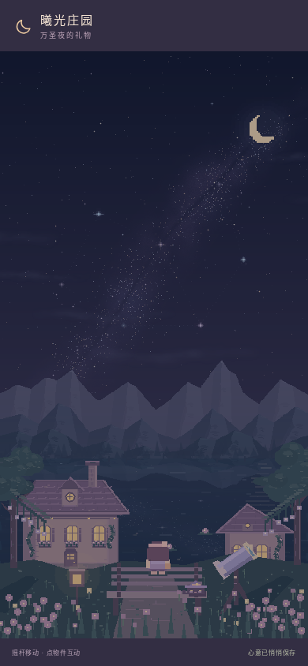
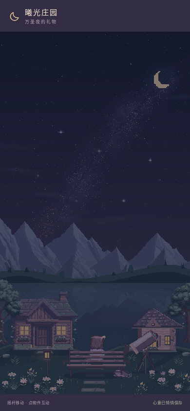
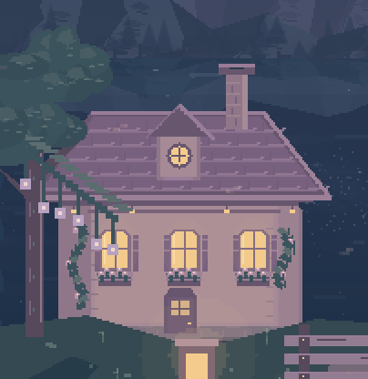
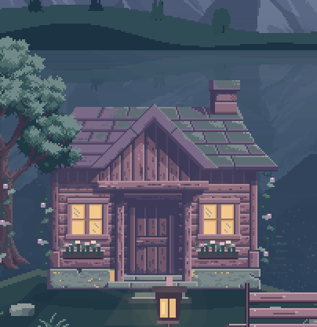
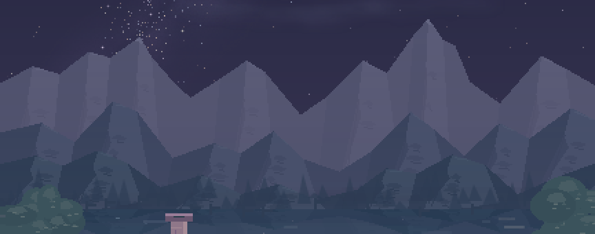
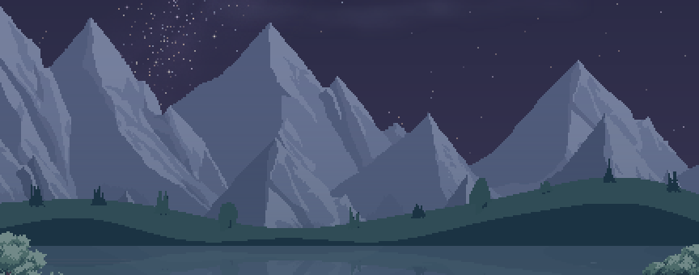
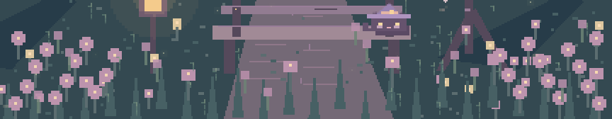
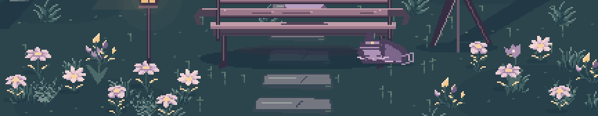

给小曦，一处更值得停留的湖畔。
这是一次独立的美术样板。保留原来的星空、月亮、两座小屋、长椅和望远镜，重新整理山体、建筑、叶簇、花草、倒影与角色的关系。
正式版没有被覆盖。预览域名的存档与正式版彼此独立。进入实验版后，可点顶部星星 → 去星光观景台。其余场景沿用原画，不在本轮重制范围内。


修改前本轮样板拖动分界线，对齐比较同机位 · 同时刻
让材质经得起靠近看
以下是夜间画布同一区域的最近邻放大，不做锐化、补帧或生成式修图。






采用 karsiori 的 FREE Pixel Art Mountains Tileset and Backgrounds 中13张CC0素材，已下载到项目、统一配色与受光；完整对应表、许可证和改动说明见素材记录。原星空、流星雨、音乐及本轮坐姿、长椅、船屋、望远镜、灯光等原创内容均留有说明。
待你验收：两侧树木在窄屏仍有自然出画；小船屋和主小屋的笔触还可进一步统一；坐姿先覆盖背面与服装配色，尚未逐套补齐装饰。构建与手机内核模拟不替代真实手机的屏幕和GPU表现。